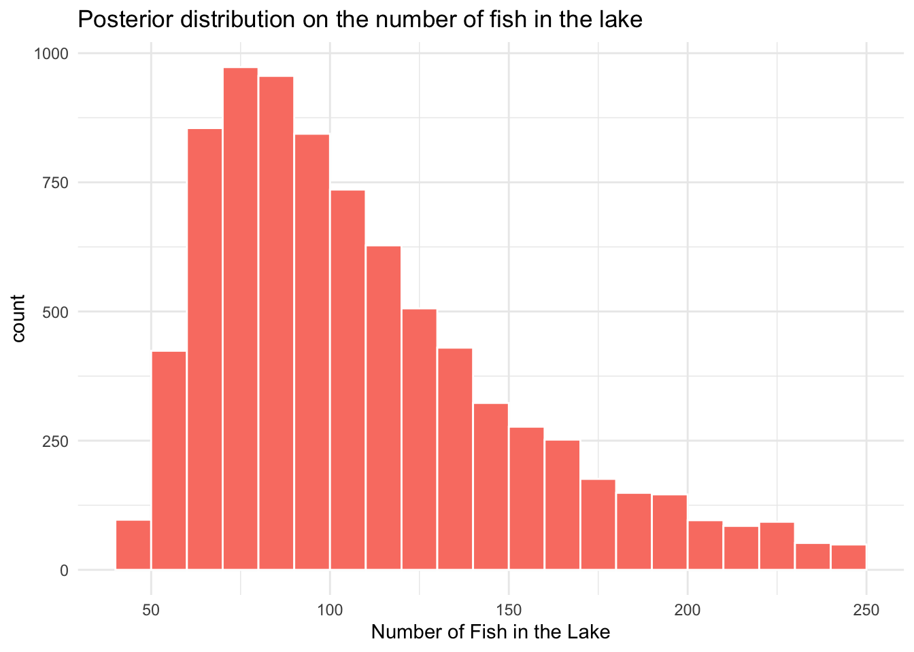
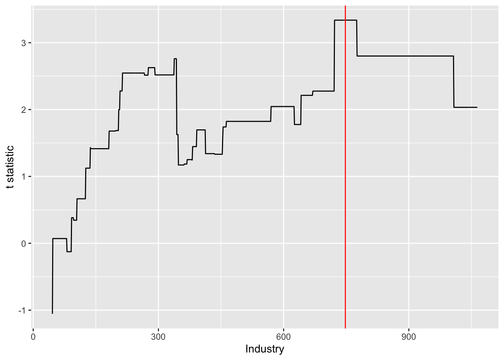

Tuesday, October 28, 2022
Today
- More about multiple variable regression
- Regression trees
Removing variables from a model
Often you start with a model that includes many explanatory variables. This is because you are not sure what variables are important in explaining the response variable.
A model with all the possible explanatory variables is called a ‘full model.’ The R squared value is largest when all explanatory variables are included in the model. But there is a cost. This cost is called ‘model bias.’ The model is biased toward the particular set of data used to create the model.
If there is too much bias then the model will make poor predictions when given another set of similar data.
Model bias/not data bias.
When you remove a variable from a model, you decrease the variance explained but you add a degree of freedom. This makes the model less biased. It is less tuned to the data you have.
A balance is achieved in this trade-off between minimizing bias and maximizing variance explained by considering the adjusted R squared value. You choose a model that has the largest adjusted R squared.
If the adjusted R squared gets smaller AFTER you remove a particular explanatory variable from the full model, then you should keep that variable in the model.
The AIC (Akaike Information Criterion) is similar to the adjusted R squared. It helps achieve a balance between maximizing the variance explained and minimizing the bias. Using math, AIC = \(2 k - 2 \log(L)\), where \(k\) is the number of model parameters (1 + number of explanatory variables) and \(L\) is the highest value from the likelihood function.
The likelihood function (likelihood) is the probability of observing the data you have, given the model.
The AIC rewards good fitting models with a penalty for the size of the model (number of explanatory variables). Put simply: given a set of candidate models for your data, you should choose the one with the lowest AIC.
Let’s see how this works. Returning to the model for gas consumption at the state level.
url <- "http://myweb.fsu.edu/jelsner/temp/data/PetrolConsumption.txt"
PC.df <- readr::read_table(url)##
## ── Column specification ────────────────────────────────────────────────────────
## cols(
## Petrol.Tax = col_double(),
## Avg.Inc = col_double(),
## Pavement = col_double(),
## Prop.DL = col_double(),
## Petrol.Consumption = col_double()
## )head(PC.df)## # A tibble: 6 × 5
## Petrol.Tax Avg.Inc Pavement Prop.DL Petrol.Consumption
## <dbl> <dbl> <dbl> <dbl> <dbl>
## 1 9 3571 1976 0.525 541
## 2 9 4092 1250 0.572 524
## 3 9 3865 1586 0.58 561
## 4 7.5 4870 2351 0.529 414
## 5 8 4399 431 0.544 410
## 6 10 5342 1333 0.571 457First you fit a full model that includes all four explanatory variables for explaining the variation in gas consumption. They are Prop.DL, Pavement, Avg.Inc, and Petrol.Tax. You regress gas consumption onto these four variables and save the object as modelFull.
modelFull <- lm(Petrol.Consumption ~ Prop.DL + Pavement + Avg.Inc + Petrol.Tax,
data = PC.df)Then use the drop1() function, which takes the regression model object and returns a table showing what happens when each variable is successively removed from the model.
drop1(modelFull)## Single term deletions
##
## Model:
## Petrol.Consumption ~ Prop.DL + Pavement + Avg.Inc + Petrol.Tax
## Df Sum of Sq RSS AIC
## <none> 189050 407.37
## Prop.DL 1 212355 401405 441.51
## Pavement 1 2252 191302 405.94
## Avg.Inc 1 65729 254779 419.69
## Petrol.Tax 1 31632 220682 412.80The table includes the degrees of freedom for each variable (Df) the sum of the squares, the residual sum of squares (RSS) and the AIC value (AIC).
The first row of the table (labeled <none>) shows the RSS and the AIC value for the full model (all explanatory variables). The RSS is 189050. Recall that this value is computed as the sum of the residuals squared and is identical to the model deviance.
sum(residuals(modelFull)^2)## [1] 189050deviance(modelFull)## [1] 189050Model deviance has units of the response variable squared and you want this value to be as small as possible, but without making the model too biased.
The first row also gives the AIC value for the full model. The AIC has no units. Here the value for AIC from the full model is 407.37.
Think of this as the goal line. Variables that, when removed from the model, have a value that exceeds this line should be kept in the model. Variables that when removed from the model have a value that falls short of this line should be removed from the model.
After the first row, successive rows show what happens to the AIC value after the particular variable is removed from the full model.
The row labeled Prop.DL tells us what happens when the explanatory variable Prop.DL is removed. The RSS increases to 401405 (from 189050) and you gain one degree of freedom (less bias). Said another way, the value of 212355 in the Sum of Sq column indicates how much the variable Prop.DL is worth to the model. By removing Prop.DL from the full model, the RSS increases from 189050 to 401405; a difference of 212355. But the AIC is 441.51, which exceeds 407.37 (the goal line) so Prop.DL should be kept in the model.
The next row labeled Pavement gives the same information but for the Pavement variable. By removing Pavement from the full model, the RSS increases from 189050 to 19130; a difference of 2252. But the AIC is 405.04, which falls short of 407.37 (the goal line) so Pavement should be removed from the model.
The AIC column keeps the score on which variables should be kept and which should be removed. The AIC for the model having all the explanatory variables is 407.37. A model without Prop.DL has an AIC of 441.51, which is LARGER than the AIC for the full model, so you keep Prop.DL in the model. In contrast, a model without Pavement has an AIC of 405.94, which is SMALLER than the AIC for the full model, so you remove Pavement from the model.
The variable Avg.Inc when removed results in an AIC that exceeds the value of 407.37 so it should be kept in the model as does the variable Petrol.Tax.
In summary, to simplify a multiple variable regression model you compare the AIC values for each variable against the AIC value for the full model. If the AIC value for a variable is less than the AIC for the full model then the trade-off is in favor of removing it.
The table indicates that Pavement should be removed. The next step is to create a reduced model and then check the single-variable deletions again. That is you repeat the drop1() function on the reduced model.
modelReduced <- lm(Petrol.Consumption ~ Prop.DL + Avg.Inc + Petrol.Tax,
data = PC.df)
drop1(modelReduced)## Single term deletions
##
## Model:
## Petrol.Consumption ~ Prop.DL + Avg.Inc + Petrol.Tax
## Df Sum of Sq RSS AIC
## <none> 191302 405.94
## Prop.DL 1 243586 434889 443.36
## Avg.Inc 1 69532 260834 418.82
## Petrol.Tax 1 33742 225044 411.74Now all the AIC values exceed the value given in the row labeled <none>, so you conclude there is no reason to remove any of the remaining variables so you are finished and this is your final model.
The stepwise regression procedure
With only a hand full of variables to check the drop1() function is recommended. With a large number of variables an automated procedure is preferred.
Stepwise regression is a procedure (not a model) that automates this. It finds the best model from a set of candidate models when the models are nested, and it can be useful for sifting through a large number of explanatory variables.
Stepwise regression can be done by backward deletion of variables or by forward selection of the variables. Backward deletion amounts to automating the drop1() function and forward selection amounts to automating the add1() function.
Both drop1() and add1() use the AIC as a criterion for choosing. To see it implemented you return to the full model and apply the step() function.
step(modelFull)## Start: AIC=407.37
## Petrol.Consumption ~ Prop.DL + Pavement + Avg.Inc + Petrol.Tax
##
## Df Sum of Sq RSS AIC
## - Pavement 1 2252 191302 405.94
## <none> 189050 407.37
## - Petrol.Tax 1 31632 220682 412.80
## - Avg.Inc 1 65729 254779 419.69
## - Prop.DL 1 212355 401405 441.51
##
## Step: AIC=405.94
## Petrol.Consumption ~ Prop.DL + Avg.Inc + Petrol.Tax
##
## Df Sum of Sq RSS AIC
## <none> 191302 405.94
## - Petrol.Tax 1 33742 225044 411.74
## - Avg.Inc 1 69532 260834 418.82
## - Prop.DL 1 243586 434889 443.36##
## Call:
## lm(formula = Petrol.Consumption ~ Prop.DL + Avg.Inc + Petrol.Tax,
## data = PC.df)
##
## Coefficients:
## (Intercept) Prop.DL Avg.Inc Petrol.Tax
## 307.32790 1374.76841 -0.06802 -29.48381As another example, let’s consider the stackloss data frame.
?stackloss
head(stackloss)## Air.Flow Water.Temp Acid.Conc. stack.loss
## 1 80 27 89 42
## 2 80 27 88 37
## 3 75 25 90 37
## 4 62 24 87 28
## 5 62 22 87 18
## 6 62 23 87 18You are interested in regressing stack loss (stack.loss) onto air flow (Air.Flow), water temperature (Water.Temp), and acid concentration (Acid.Conc.).
modelFull <- lm(stack.loss ~ Water.Temp + Air.Flow + Acid.Conc.,
data = stackloss)Note that with many explanatory variables you can write the model formula as stack.loss ~ .. The period after the tilde indicates that you want all the remaining columns in the data frame as explanatory variables saving the effort of typing all the variable names.
step(modelFull)## Start: AIC=52.98
## stack.loss ~ Water.Temp + Air.Flow + Acid.Conc.
##
## Df Sum of Sq RSS AIC
## - Acid.Conc. 1 9.965 188.80 52.119
## <none> 178.83 52.980
## - Water.Temp 1 130.308 309.14 62.475
## - Air.Flow 1 296.228 475.06 71.497
##
## Step: AIC=52.12
## stack.loss ~ Water.Temp + Air.Flow
##
## Df Sum of Sq RSS AIC
## <none> 188.80 52.119
## - Water.Temp 1 130.32 319.12 61.142
## - Air.Flow 1 294.36 483.15 69.852##
## Call:
## lm(formula = stack.loss ~ Water.Temp + Air.Flow, data = stackloss)
##
## Coefficients:
## (Intercept) Water.Temp Air.Flow
## -50.3588 1.2954 0.6712Backward deletion of variables is the default method with the step() function. That is a successive application of the drop1() function. In the case of having a large number of explanatory variables it’s a good idea to also try forward selection to see if the results are the same. This is done with the argument direction = "forward".
Transforming a response variable
When the response variable can’t be adequately described by a normal distribution often a simple transformation of the variable will make it approximately normal.
Consider the following data set containing pollution levels in 41 cites. The data are in the file pollute.txt. The data set contains levels of pollution in 41 cites along with explanatory variables including average temperature, the amount of industry, the population, the average wind speed, the amount of rain, and the number of wet days.
url <- "http://myweb.fsu.edu/jelsner/temp/data/pollute.txt"
pollute.df <- readr::read_table(url)##
## ── Column specification ────────────────────────────────────────────────────────
## cols(
## Pollution = col_double(),
## Temp = col_double(),
## Industry = col_double(),
## Population = col_double(),
## Wind = col_double(),
## Rain = col_double(),
## Wet.days = col_double()
## )head(pollute.df)## # A tibble: 6 × 7
## Pollution Temp Industry Population Wind Rain Wet.days
## <dbl> <dbl> <dbl> <dbl> <dbl> <dbl> <dbl>
## 1 24 61.5 368 497 9.1 48.3 115
## 2 30 55.6 291 593 8.3 43.1 123
## 3 56 55.9 775 622 9.5 35.9 105
## 4 28 51 137 176 8.7 15.2 89
## 5 14 68.4 136 529 8.8 54.5 116
## 6 46 47.6 44 116 8.8 33.4 135Here you want to fit a multiple regression model that can predict pollution levels (Pollution) from the explanatory variables including average temperature, the amount of industry, the population, the average wind speed, the amount of rain, and the number of wet days.
You start with a histogram and a density plot of the response variable Pollution.
library(ggplot2)
ggplot(data = pollute.df,
mapping = aes(x = Pollution)) +
geom_histogram(binwidth = 10, color = "white")
sm::sm.density(pollute.df$Pollution,
model = "Normal")
The response variable Pollution (SO2 concentration in ppm) can not be described by a normal distribution. You can still use regression but you should transform the response variable to make the distribution look more like a normal distribution. What transform should you use?
Raising a variable \(y\) to some power is most common. Box and Cox (1964) suggested a family of transformations, called the power transformations, to make the data histogram look more like a normal distribution. \[ y_\lambda' = \frac{y^\lambda-1}{\lambda} \]
The particular transformation depends on the value of \(\lambda\). The choice of which value of \(\lambda\) to use is determined using the boxcox() function from the {MASS} package.
The first argument is a lm() formula. Also needed are the data and a sequence of potential value for \(\lambda\) (lambda). Here you are interested in the response variable Pollution without any explanatory variables so the model formula is Pollution ~ 1.
MASS::boxcox(Pollution ~ 1,
data = pollute.df,
lambda = seq(-1, 1, length = 10))
The output is a plot of the likelihood as a function of possible values for \(lambda\). The likelihood represents the chance of observing the data given the transformation and the normal distribution as the model.
You choose the lambda that maximizes the likelihood. In this case it is -.25. Note: \(\lambda\) is a random variable and thus the 95% uncertainty interval provides a range of values. Here the log-likelihood is maximized between -.75 and .2.
Create a new variable (Pollution2) that is the transformed Pollution variable (with lambda = -.25 in the above formula).
pollute.df <- pollute.df |>
dplyr::mutate(Pollution2 = (Pollution^(-.25) - 1) / -.25)
sm::sm.density(pollute.df$Pollution2,
model = "Normal")
The variable Pollution2 can be described by a normal distribution.
More precisely the concern is the distribution of the model residuals. The distribution of the response variable is not of big concern. The normality assumption under girding accurate inferences made with the model is that the distribution of residuals are described by a normal distribution.
To determine the appropriate Box-Cox transformation on your response variable so that the model residuals can be described as normal use the model formula inside the boxcox() function.
MASS::boxcox(Pollution ~ Temp + Industry + Population + Wind + Rain,
data = pollute.df,
lambda = seq(-1, 1, length = 10))
Regression trees
A regression tree is a machine learning algorithm. The focus with machine learning algorithms is prediction rather than inference or causality.
Linear regression is a prediction model for the conditional mean. The conditional mean is the average response for specific values of the explanatory variables. For example, the average maximum heart rate for specific values of age.
A regression tree is also a prediction model for the conditional mean. But with a regression tree the conditioning is done by dividing the space defined by the explanatory variables into distinct groups.
Given a set of data a regression tree is trained to predict what the average response will be for specific values of the explanatory variables within the data set.
To train a regression tree you can use the tree() function from the {tree} package. As an example you train a regression tree on the response variable Pollution from the data frame pollute.df.
library(tree)## Registered S3 method overwritten by 'tree':
## method from
## print.tree clitree.model <- tree(Pollution ~ Temp + Industry + Population + Wind + Rain,
data = pollute.df)
tree.model## node), split, n, deviance, yval
## * denotes terminal node
##
## 1) root 41 22040.00 30.05
## 2) Industry < 748 36 11260.00 24.92
## 4) Population < 190 7 4096.00 43.43 *
## 5) Population > 190 29 4187.00 20.45
## 10) Temp < 61.55 22 3217.00 23.68
## 20) Rain < 36.165 9 296.00 15.00 *
## 21) Rain > 36.165 13 1773.00 29.69
## 42) Population < 513.5 6 179.30 22.67 *
## 43) Population > 513.5 7 1043.00 35.71 *
## 11) Temp > 61.55 7 17.43 10.29 *
## 3) Industry > 748 5 3002.00 67.00 *The output is a table listing the explanatory variables, splits, number of cases, and deviances (RSS).
A plot helps make sense of this output. Here you use the generic plot() method and add text with the text() function.
plot(tree.model)
text(tree.model)
The plot looks like an upside down tree. The branches (called splits) are the rules. Rules (involve the ‘less than’ symbol) are applied to the explanatory variables. Branches end with leaves. The value at the leaf is the mean of the response variable for that subset of observations.
In this case the first split of the response variable Pollution is on the explanatory variable Industry. The split is a rule on Industry. Is the value of Industry less than 748 units? If yes, branch to the left; if no branch to the right. The left branch leads to another split. The right branch leads to a leaf (terminal node).
Following the left branch the next split is on Population. Is the value of Population less than 190 units? If yes, branch to the left; if no branch to the right. The left branch leads to a terminal node. The right branch leads to another split, this time on Wet.days.
The model is fit using binary partitioning. The response variable is split along coordinate axes of the explanatory variables so that at any node, the split which maximally distinguishes the response variable is selected. Splitting continues until nodes cannot be split or until there are too few cases (less than 6 by default).
The variable that “explains” the greatest amount of variation in the response variable is selected first. Since the first split is on the variable Industry at a value of 748, let’s look at how Pollution is partitioned on this variable. First create a logical vector called split containing TRUE and FALSE depending on whether the value is less than 748. Then use this variable to select the values of Pollution (from the pollute.df) to compute the mean.
split <- pollute.df$Industry < 748
mean(pollute.df$Pollution[split])## [1] 24.91667mean(pollute.df$Pollution[!split])## [1] 67Or using functions from the {dplyr} package.
pollute.df |>
dplyr::mutate(split = Industry < 748) |>
dplyr::group_by(split) |>
dplyr::summarize(Avg = mean(Pollution))## # A tibble: 2 × 2
## split Avg
## <lgl> <dbl>
## 1 FALSE 67
## 2 TRUE 24.9Thus when Industry is less than 748 the mean value for Pollution is 24.9 and when it is greater or equal to 748 the mean value for Pollution is 67 and when it is less than 748, the mean value of Pollution is 24.9. Graphically you can illustrate this using the following lines of code (code chunk).
library(ggplot2)
ggplot(data = pollute.df,
mapping = aes(x = Industry, y = Pollution)) +
geom_point(size = 2) +
geom_vline(xintercept = 748, linetype = 'dashed') +
geom_segment(x = 748, xend = max(pollute.df$Industry),
y = 67, yend = 67) +
geom_segment(x = 0, xend = 748,
y = 24.92, yend = 24.92)
The graph shows that the split of Pollution on Industry < 748 results in two means for Pollution that are different. The split results in less than 6 observations of Pollution for Industry >= 748, so a terminal node results and the mean value of Pollution for these (5) observations is 67.
To check if the split is statistically significant by typing
t.test(Pollution ~ split,
data = pollute.df)##
## Welch Two Sample t-test
##
## data: Pollution by split
## t = 3.337, df = 4.4887, p-value = 0.02428
## alternative hypothesis: true difference in means between group FALSE and group TRUE is not equal to 0
## 95 percent confidence interval:
## 8.52294 75.64373
## sample estimates:
## mean in group FALSE mean in group TRUE
## 67.00000 24.91667The relatively large \(t\) value (greater than 3) results in a small \(p\)-value (less than .05) indicating you can safely reject the null hypothesis.
Let’s try another split. What do you find?
split <- pollute.df$Industry < 720
t.test(Pollution ~ split,
data = pollute.df)##
## Welch Two Sample t-test
##
## data: Pollution by split
## t = 2.2762, df = 5.4971, p-value = 0.06712
## alternative hypothesis: true difference in means between group FALSE and group TRUE is not equal to 0
## 95 percent confidence interval:
## -3.193031 67.507317
## sample estimates:
## mean in group FALSE mean in group TRUE
## 57.50000 25.34286The \(t\) value goes down and the \(p\)-value increases indicating that splitting the variable Industry at a value of 720 is not as good as splitting it at a value of 748.
Can you find a better split of Pollution along Industry? Here is how you can answer that question.
tvalue <- numeric()
be <- quantile(pollute.df$Industry, c(.05, .95))
for(i in be[1]:be[2]){
split = pollute.df$Industry < i
tvalue = c(tvalue, t.test(pollute.df$Pollution ~ split)$statistic)
}
df <- data.frame(Industry = be[1]:be[2], tvalue)
ggplot(data = df,
mapping = aes(x = Industry, y = tvalue)) +
geom_line() +
geom_vline(xintercept = 748, color = "red") +
xlab("Industry") + ylab("t statistic")
The split value (748) found by the regression tree for the variable Industry maximizes the \(t\)-value over all such splits.
How a regression tree is trained. For a given explanatory variable, the algorithm
- Selects a candidate split value.
- Computes the mean of the response above and below the value.
- Computes the deviance (residual sum of squares) from the two means.
- Goes through all possible splits.
- Looks to see which split gives the lowest deviance. This is the split that gives the largest \(t\) statistic.
- Splits the entire data set into high and low subsets based on this split value.
- Repeats this procedure on each subset of the data on either side of the first split.
- Keeps going until no additional reduction in deviance is obtained, or there are too few data values to merit further divisions.
The importance of a split to the regression tree is the reduction in the deviance and the importance is represented on the tree plot as the length of the hanging branch. The reduction in deviance is larger for the split on Population than for the split on Wet.days.
The two key components of the training algorithm are: (1) Which variables to use in the split, and (2) how to best achieve the split given a variable. Tree regression is similar to forward selection in the stepwise regression procedure. Include the most important variable (the one that explains the most variance in the response) first then see if additional variables decrease the deviance keeping track of the cost associated with the loss of the degree of freedom.
Model output from a trained regression tree is printed by typing the name of the model object.
tree.modelThe terminal nodes are denoted with an asterisk (6 of them). The node number is labeled on the left with the name of the variable on which the split is made.
Next is the split criterion which shows the threshold value and an inequality sign. The number of observations going into the split (or terminal node) comes next. The deviance value and the mean over all observations are shown as the next two values.
At the root node the mean is 30.05 (mean(Pollution)) with a deviance of 22040 from 41 observations. The split on Industry at a threshold of 748 reduces the deviance to 11260 for values of Pollution less than 748 (node 2) and to 3002 for values of Pollution greater than or equal to 748 (node 3). The reduction in deviance is 22040 - (11260 + 3002) Since node 3 has less than 6 observations, it becomes a terminal node. The remaining deviance from node 2 is split using Population at a value of 190.
Note how the nodes are nested: within node 2, for example, node 4 is terminal but node 5 is not; within node 5 node 10 is terminal but node 11 is not; within node 11, node 23 is terminal but node 22 is not, and so on.
The highest mean value of Pollution according to this tree regression is 67 (node 3) and the lowest is 12 (node 10).
The most extreme observations of Industry stand alone in leading to a large level of pollution. For the rest, Population is the most important variable, but it is low populations that are associated with the highest levels of pollution.
For high levels of population (Population > 190), the number of wet days becomes a key determinant of pollution; places with the fewest wet days (less than 108 per year) have the lowest pollution levels.
For those places with more than 108 wet days, it’s temperature that is most important in explaining variation in pollution levels; the warmest places have the lowest air pollution levels. For the cooler places with more wet days, it is wind speed that matters; windier places are less polluted.
This kind of nuanced and contingent explanation of how the explanatory variables influence the response is made possible with a regression tree. The cost is the potential to interpret noise as signal.
Regression trees are used mainly for predictions. Predicted values are easy to anticipate. For example it is obvious that, given the model, if Industry exceeds 748, then the Pollution level is predicted to be 67. If Industry is less than 748 and Population is less than 190, then the Pollution level is predicted to be 43.43. The predict() method works like it does for a linear regression model object. The first argument is the model object and the next is the data frame containing the variables.
predict(tree.model, newdata = data.frame(Industry = 750, Population = 0,
Wet.days = 0, Temp = 0, Wind = 0, Rain = 0))## 1
## 67predict(tree.model, newdata = data.frame(Industry = 740, Population = 180,
Wet.days = 0, Temp = 0, Wind = 0, Rain = 0))## 1
## 43.42857Note that you need to specify all the explanatory variables even if they are not involved with the final predicted value.
predict(tree.model, newdata = data.frame(Industry = 740, Population = 200,
Wet.days = 120, Temp = 50, Wind = 8, Rain = 0))## 1
## 15Prediction amounts to following the rules defined by the regression tree. You start with the value of the variable Industry and work your way down until you come to a terminal node. The predicted value is the group mean of the response.
The standard error on the predicted value is more difficult to work out. You could use the standard error on the subset mean for that leaf. But this ignores the uncertainty surrounding the other decisions (branches) that came before.
There is no simple way to get an uncertainty estimate about the predicted level of pollution.
Simplifying the model is a trade-off between minimizing the bias and maximizing the variance explained. If the regression tree has many explanatory variables with many branches then it will explain more variance, but it is biased toward the particular data set. If the tree is too simple it will not explain much of the variance. If the tree is too complex predictions on new data will be poor.
Pruning the tree helps balance this trade-off. The prune.tree() function gives a sequence of smaller trees from the largest tree by removing the least important splits.
The function returns the tree size (number of terminal nodes), the total deviance of each tree, and the increase in deviance by going from a larger tree to a smaller tree.
prune.tree(tree.model)## $size
## [1] 6 5 3 2 1
##
## $dev
## [1] 8633.905 9183.912 11284.887 14262.750 22037.902
##
## $k
## [1] -Inf 550.0073 1050.4873 2977.8633 7775.1524
##
## $method
## [1] "deviance"
##
## attr(,"class")
## [1] "prune" "tree.sequence"Here you see the largest tree (6 terminal nodes) results in the smallest deviance (8877). By pruning one branch the deviance increases (9240) but only by a relatively small amount (364 or 4%). Similarly by pruning a second branch the deviance increases, this time a bit more. It is helpful to plot the deviance as a function of tree size.
plot(prune.tree(tree.model))
Here the plot is opposite of the table. Deviance declines with increasing complexity.
Code challenge: Make this using the grammar of graphs. Hint: save the prune tree object and then create a data frame from the object lists. Then use scale_x_reverse().
You see that the amount of decline diminishes with each node (diminishing return). In fact, you can argue that a tree with 4 terminal nodes is best since the deviance from 4 to 5 nodes is relatively small.
Suppose you want the best tree with four nodes.
tree.model2 <- prune.tree(tree.model, best = 4)
plot(tree.model2)
text(tree.model2)
tree.model2